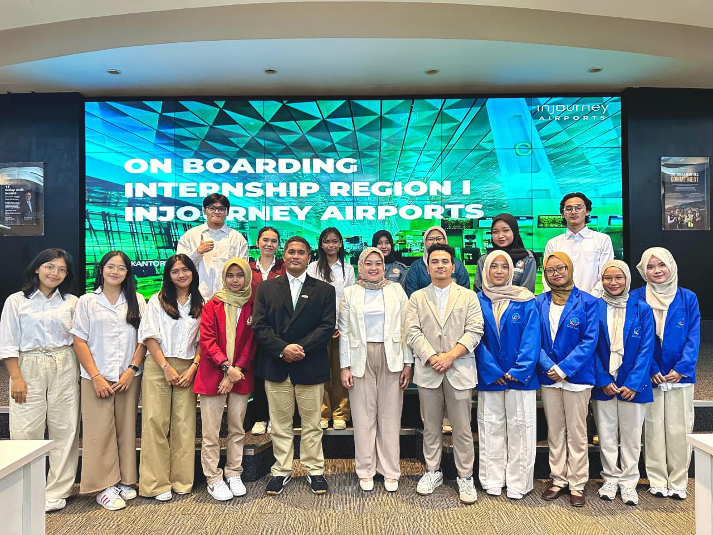
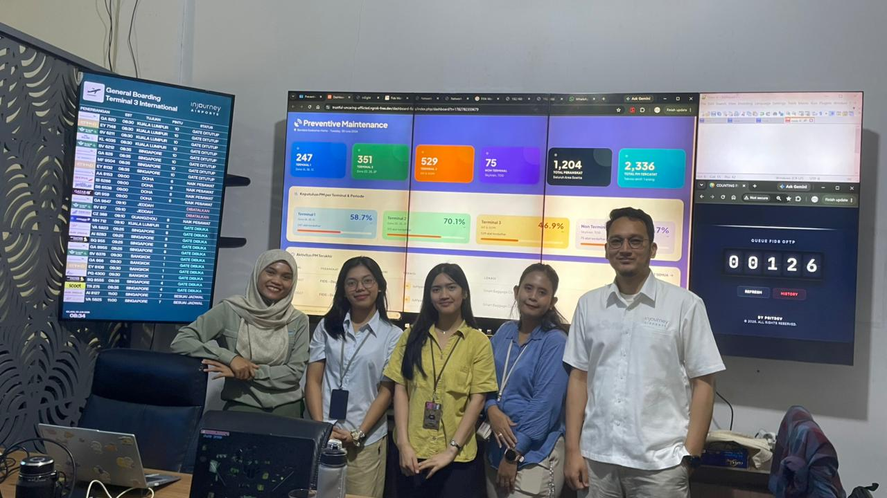

INTERNSHIP EXPERIENCE


PT Angkasa Pura Indonesia
Terlibat dalam pengembangan Sistem Preventive Maintenance (PM) Flight Information Display System (FIDS) berbasis mobile dan dashboard web untuk mendukung pengelolaan data serta pemantauan kegiatan pemeliharaan sistem secara terstruktur.